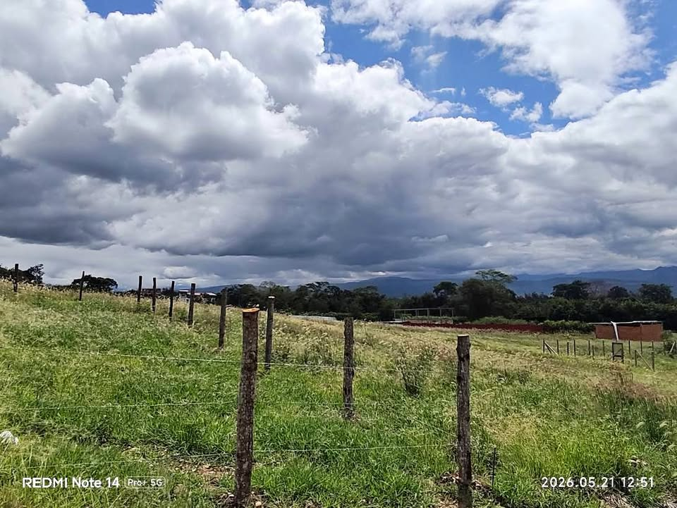

PEN48 147 m²

¿Buscas el lugar ideal para construir la casa de tus sueños o asegurar una inversión con alta plusvalía? Este lote plano y limpio cuenta con una ubicación estratégica y de rápido crecimiento en Tarapoto. ¡Listo para que empieces a construir ya mismo! 📐 Características del Terreno:Medidas ideales: 7 metros de frente por 21 metros de fondo (Área total: \(147m^{2}\)). Terreno listo: Lote completamente plano, limpio y delimitado con cerco. Servicios básicos: Cuenta con factibilidad de agua y luz (tuberías y conexiones listas a pie de lote). Ideal para familias: Zona muy tranquila, segura y con